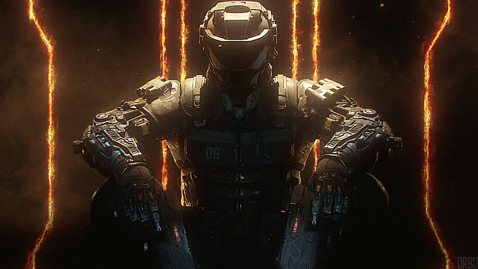
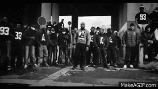

🎨 Mes centres d’intérêt

Animé / Série
Passionné par les séries et manga d'action

Jeux Vidéo
Grand fan de FPS/Battle Royale/Jeu d'affrontement

Sport
Street-Workout/Kickboxing/Boxe Anglaise/Muay thai
Photographie
Capturer des moments uniques et développer un œil créatif.

Musique
Explorer différents genres et jouer d’instruments.

Voyage
Découvrir de nouvelles cultures et paysages.